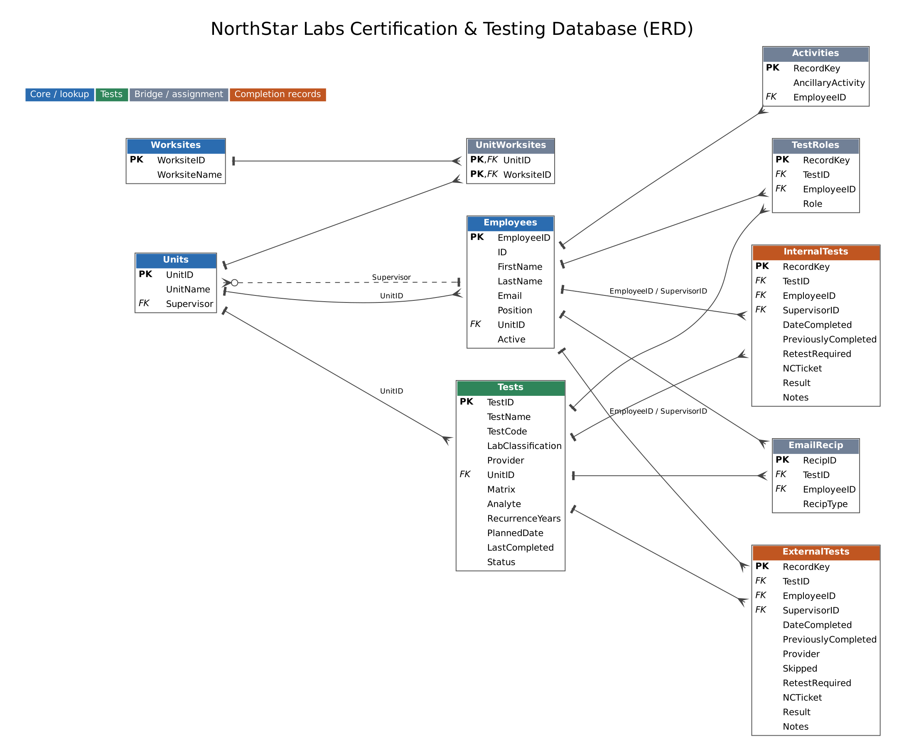

Computer Information Technology student · Aspiring database developer · Lethbridge, AB
Hi, I'm Jada. I'm a Computer Information Technology student at Lethbridge Polytechnic and an IT support student at a federal government lab, where I troubleshoot hardware, software, and network issues on my own and build the database tools my coworkers use.
What I enjoy most is database work: finding out what data people actually need, then designing something that connects it all together like a web. I'm looking to start my career in a role where I can design, build, and improve data systems, ideally as a database developer.
This portfolio shows how I work. You'll find my mission statement, resume, two database systems I designed and built on Microsoft Power Platform, a code sample, and what people I've worked with say about me.
I build systems that make information easier to find, trust, and act on. I'm drawn to the planning and problem-solving side of database work: figuring out what people actually need from their data, then designing something that holds up as that need grows. My goal is to keep building toward a career as a database developer, bringing the same independence and attention to detail I've relied on troubleshooting IT issues on my own, to systems other people depend on every day.
Why this is here
It shows self-awareness and career direction. It demonstrates reflection on my strengths (planning, problem solving, independence) and connects them to the kind of work I want to do.
IT On-Site Support Student, Canadian Food Inspection Agency (CFIA)
Independently troubleshoot hardware, software, and networking issues, frequently without direct supervision
Designed and built a two-part employee database (Training and Certification tracking) using Microsoft Power Platform
Provided user support and training on internally built database tools
Sep 2025 – Apr 2026
Tutor, Lethbridge Polytechnic
Tutored 6–7 first-year Computer Information Technology students in programming and binary math
Explained and reinforced concepts as well as problem-solving strategies for student success
Jul 2020 – Aug 2024 (full time & seasonal 2016–2019)
Production Worker, Tradesman Manufacturing
Operated and maintained CNC lasers in a fast-paced production environment
Collaborated and trained team members to meet production goals
Worked inside confined CNC laser spaces to diagnose issues
Troubleshot and resolved equipment malfunctions by diagnosing mechanical and technical issues
Education
Sep 2024 – Expected 2027
Computer Information Technology Diploma, Lethbridge Polytechnic
Dean's List for maintaining a high grade point average and academic excellence. Relevant coursework: Data Structures & Algorithms, Operating Systems, Networking Design.
Skills
C#
Java
HTML / CSS
MySQL
Relational database design
ER diagrams
Power Apps
Power Automate
Power BI
Git
Visual Studio
Networking (WAN/LAN)
Hardware & software support
Academic Projects
Networking & Web Servers: Worked with Apache and PHP to create multi-step web forms and practiced troubleshooting with both.
Database Project: Created a relational database for a horse stable management system using MySQL and ER diagrams.
Why this is here
My resume summarizes my experience, education, and skills in one place. It shows hands-on IT support experience, database work, tutoring (communication and teaching), and the ability to learn new tools quickly.
Project Work
This system started as real work project at my placement. With my employer's permission, I rebuilt it with fictional data so I can show how they work. All names, tests, and records below are made up.
1. Certification & Test Tracking System
The problem: staff certifications and required recurring tests (proficiency tests and internal panels) were hard to track, so it was easy to miss a due date or lose track of a retest.
What I built:
A relational database of 10 tables covering employees, units, worksites, tests, test assignments, notification recipients, and completion records.
40 recurring tests across 8 units, each with a recurrence period, last completed date, and planned date.
Internal and external completion records, with results, non-conformance (NC) tickets, and retest tracking.
A many-to-many link between units and worksites using a bridge table, and between tests and employees using an assignment table.
A Power App to add training and certification records to the database.
A Power BI dashboard that flags tests as Overdue, Due Soon, or Up to Date, and shows completions and open retests.
Tools: Excel, Power Query, Power Apps, Power BI, DAX

Entity relationship diagram (ERD) for the certification database.Power BI: compliance overview (overdue, due soon, up to date).Power BI: completions and open retests.Power App for adding certification and training records.
Why this is here
This is my strongest example of end-to-end database work. It demonstrates requirements gathering with end users, relational design (keys, relationships, bridge tables, normalization), building a data entry app, reporting in Power BI, and working independently from a business need to a working system.
2. Employee Training Database, another Work Project
The problem: training records for staff needed to be tracked and reported on in one place instead of scattered files. I do not have any examples of this database currently.
What I built:
A star schema data model with fact and dimension tables and bridge tables.
DAX calculated columns to turn raw records into the statuses people actually need to see.
A four-page Power BI dashboard for reporting.
Three automated Power Automate flows to keep records current without manual work.
A Power App to add training records to the database.
Tools: Excel, Power Query, Power Automate, Power Apps, Power BI, DAX
Training database data model.Power BI training dashboard.Power App for adding training records.
Why this is here
It shows the reporting and automation side of database work: modelling for analysis (star schema), writing DAX, building dashboards, and automating routine tasks with Power Automate.
Programming Work Sample
TO ADD
Paste 20–40 lines of your own code below (DAX, SQL, or Power Query), with comments, and replace the description. Keep the fake-data version only.
// Paste your code sample here
What it does: [one or two sentences]
Why this is here
[Which skills this shows and how, for example: logic and problem solving, writing readable code with comments, turning business rules into code.]
Why this is here
References give an outside view of how I work. They back up the skills I describe (independence, problem solving, teamwork, reliability) with what the people I've worked with say.
Contact
I'm looking for opportunities to start my career in database development and IT.
TO ADD My Email: <a href="jada.r.gordon@gmail.com">jada.r.gordon@gmail.com</a>